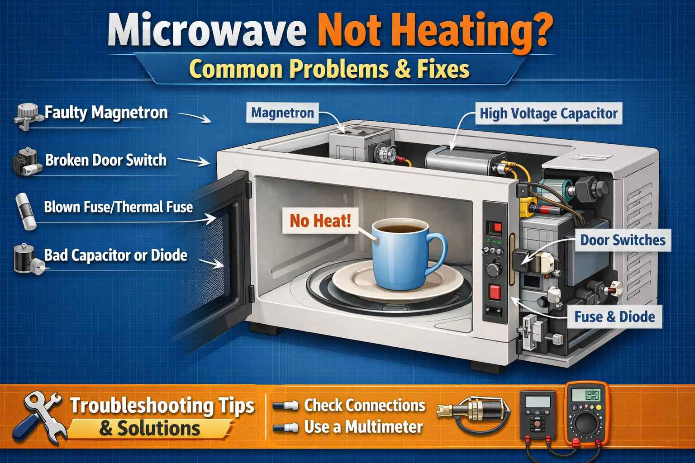

DANGER - HIGH VOLTAGE WARNING: Microwave ovens contain high voltage components up to 5000 volts that can retain dangerous charge even when unplugged. Only qualified technicians should attempt internal repairs. Never open the microwave case unless you are trained and have discharged the high voltage capacitor.
A retired government employee from Attock called me in November 2011. He said "My Samsung microwave runs but does not heat. The light comes on and the plate spins but my food stays cold." I asked him when he last cleaned the waveguide cover. He did not know what that was. He opened the microwave and found the waveguide cover was black and burned. He bought a replacement cover for 200 rupees. He installed it himself. The microwave started heating again. He was very happy to save money on his pension.
Brand: Samsung | Fix: Replace burned waveguide cover
Microwave runs but food is cold? This is a common problem that usually indicates a faulty component in the high voltage circuit. Before calling a technician, understand these 8 common causes. However, due to high voltage dangers, most internal repairs should be left to professionals.
Quick Test: Place a cup of water (250 ml) in the microwave and run for 1 minute on HIGH. The water should be hot near boiling. If the water is cold or barely warm, the heating system is faulty. If the microwave runs but there is no heat, do not continue using it.
A housewife from Khanewal called me in May 2013. She said "My LG microwave is not heating properly. Sometimes it heats, sometimes it does not. The light flickers." I asked her to check the door. She found that the door was not closing properly because a small piece of food was stuck in the latch. She removed the food. The door closed firmly. The microwave started working normally. She said "Such a small thing caused such a big problem. Thank you for your help."
Brand: LG | Fix: Remove food debris from door latch
Problem: Microwave has multiple door safety switches. If any switch fails, the microwave will not operate or will not heat. The light and turntable may still run but no heat.
Safe external check: Open and close the door firmly. Listen for clicks. If no click, a switch may be faulty. Door switch replacement requires opening the microwave. Professional only due to high voltage.
Problem: The magnetron is the component that generates microwaves. This is the most common failure when a microwave runs but does not heat.
Symptoms: Microwave runs normally with light, fan, and turntable, but food stays cold. No unusual noises.
Fix: Magnetron replacement requires professional service. Contains beryllium oxide which is toxic. Replacement often costs 50 to 70 percent of a new microwave. For basic models, buying new is usually more economical.
A small business owner from Narowal called me in September 2015. He said "My Dawlance microwave is not heating. The fan runs but no heat. I use this microwave for my tea stall every day." I told him the magnetron may have failed. He called a technician. The technician confirmed the magnetron was dead. The replacement cost was 4000 rupees. He decided to buy a new microwave for 7000 rupees. He said "Thank you for your honest advice. You saved me from wasting money on an old machine."
Brand: Dawlance | Fix: Magnetron replacement or replace unit
Problem: The high voltage diode converts AC to DC for the magnetron. When it fails, the magnetron will not work.
Symptoms: Microwave runs but no heat. Sometimes a buzzing sound is heard.
Fix: Diode replacement requires opening the microwave and discharging the capacitor. Professional only.
Problem: The capacitor stores high voltage for the magnetron. When it fails, the magnetron does not get proper power.
⚠️ Extreme Danger: Capacitors store lethal charge even when unplugged. They must be discharged by professionals using special tools.
Fix: Capacitor replacement. Professional only due to lethal voltage.
A college professor from Vehari called me in March 2017. He said "My Panasonic microwave is showing H97 error and not heating. What does this mean?" I told him H97 is an inverter error. The inverter board had failed. He called a Panasonic service center. They replaced the inverter board. The microwave started working. He said "Thank you for explaining the error code. The technician fixed it quickly because I knew what to tell him."
Brand: Panasonic | Error: H97 | Fix: Replace inverter board
Problem: The transformer steps up voltage to 2000 to 5000 volts for the magnetron. When it fails, no high voltage is produced.
Symptoms: Microwave runs but no heat. May hum differently or be silent.
Fix: Transformer replacement. Professional only. This is a heavy and expensive component.
Problem: Thermal fuses protect against overheating. If one blows, the microwave may run but not heat, or not run at all.
Safe external check: Check if vents are blocked. Ensure proper airflow. Check if the cooling fan is running. Listen at the back of the microwave.
Fix: Fuse replacement is possible, but the cause of the blown fuse must be found. Professional only.
A housewife from Mardan called me in July 2019. She said "My Haier microwave is not heating. There is a burning smell. What should I do?" I told her to unplug it immediately and not use it. She called a technician. The technician found that the high voltage capacitor had failed and was leaking oil. He replaced the capacitor. The microwave started working. She said "Thank you for warning me about the danger. I would have kept using it."
Brand: Haier | Fix: Replace leaking high voltage capacitor
Problem: The main control board is not sending proper signals to the high voltage circuit.
Symptoms: Microwave may have display issues, not start, or run but not heat. Error codes may appear.
Safe external check: Look for error codes on the display. Try resetting by unplugging for 5 minutes. Check if other functions like light and turntable work.
Fix: Board replacement. Professional only.
Problem: A loose or corroded connection in the high voltage circuit.
Symptoms: Intermittent heating. The microwave works sometimes and does not work other times.
Fix: Internal inspection required. Professional only due to high voltage exposure.
If all external checks pass but the microwave still does not heat, internal component failure is likely. Call a technician.
LETHAL VOLTAGE - DO NOT ATTEMPT DIY: Capacitors can hold 5000 volts for weeks after unplugging. Magnetrons contain beryllium oxide which is toxic if broken. High voltage can cause cardiac arrest or severe burns. Even professionals follow strict discharge procedures. Your life is worth more than the repair cost.
Pakistan Specific Tips: Voltage fluctuations can damage the magnetron and PCB. Use a voltage stabilizer. Keep vents clean to prevent overheating. Check for rodent damage to wires, which is common in many areas. Many cities have microwave repair specialists. Search locally for reliable service.